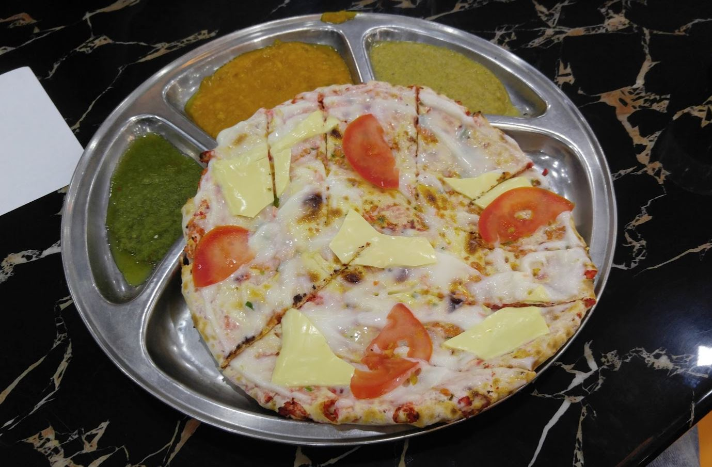
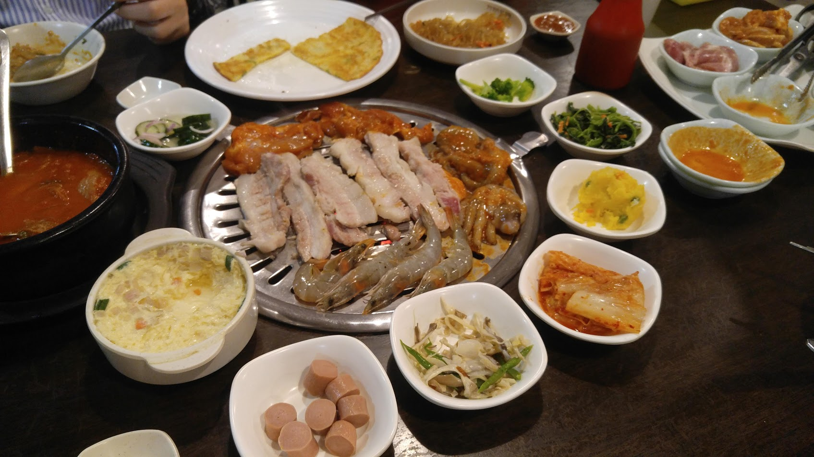
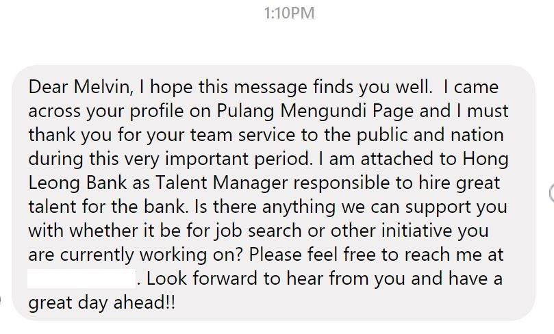
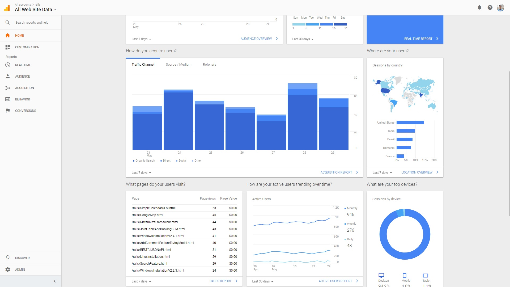

Last modified: Sat Jun 02 2018 23:38:33 GMT+0800 (Malay Peninsula Standard Time)
End of First Month Moving For Work
May 2018, the month which I moved to Kuala Lumpur for work. It is less than two months after moving back to Malaysia. There were a lot of holidays as 14th General Election was held on 9 May 2018 and the following two days were declared public holiday due to the opposition won. I contributed onto a project develop a platform that allow Malaysians to help Malaysian to go home to vote. The projects caught a lot of attention from both local and international news. I left work early on 8 May 2018 to return to home to vote. I realized that many of my friends actually participated but there are still a pretty fair amount of friends who did not even register to vote.
My work load was fairly light as I was new and had zero experience on the software stack (or technology) that they were using. So I was basically watching two different Udemy lectures for the first two weeks of work. Then, I started to setup my work environment on my work machine. Then I started looking at the source code and try to optimize it the entire program. Since I was fairly new, I was still relying on my colleague to help me to hunt for the code. My colleagues were nice and helpful. So in short, what I have been doing for work recently are looking at the program (front end and back end) and optimize it (suggest them to optimize it as I was too new to the technology) as of end of May 2018.
There are a lot of wonderful food (cheap and expensive) in the place near me. My colleague and I went out for lunch everyday and they tried to introduce new food to me. I was also trying to meet up with my friends in Kuala Lumpur. I managed to meet up with two friends in one month period. But I appreciate friends that met up with me.
One night, I met up my friend and we went to eat Taj Mahal Naan near my work. I looked up a list of food places near my area and sent the list to another of my friend that stayed in 7 cities (local and overseas) and also worked in the area where I am currently at right now to get his second opinion. He suggested me to try the Naan (as shown below).

Well, it was super interesting and I never seen anything like that before! One night, my housemate and I celebrated another housemate's birthday. We went to a Korean Barbeque near where we stayed. I had my first Korean BBQ in Malaysia (as shown below).

It was cheap and awesome plus it came with unlimited refill on some of the side dishes and pork. I will go back one day for sure.
Also, someone from Netgear sent me an email regarding testing a prototype, but it did not work out well for me. Detail here.
I finally decided to make a tutorial on how to allow people with no programming experience to host and own their website. I realized that a few of the people from my work are found from the website across Malaysia and I see that it is important to have your own website that you build and own, especially for programmers. Also, I decided to include how to make and host the book style documentation that I use in my autobiography and a few of my other tutorials. If you are going to read more about it, you can get more information here
During the forth week of May, I received a Facebook message from someone that I have no clue who she is. The message is attached below.

I was pretty surprised that she offered help and left my her contact number at the first place. I was not too sure why she tried to offer me help on job hunting. My guess was she visited the link to my website on my Facebook page and looked at my outdated CV. We chatted for a bit and she asked for contact.I provided her my cell phone number and gave her my email too. I told her that I just started my job this month and kindly rejected her help in terms of her kindness to help me to look for a job. She asked me to keep her contact number as I might need her help when it comes to job hunting one day as she has been hiring for her entire life. A week later, I contacted her and told her about the Jekyll project that I was working on. I explained to her that it might be beneficial to college students or graduating students from college and asked for her help to spread the message to her team. I was told by her that she will discuss with her team to plan how this can be carried out.
I tried to go home at least once every two weeks: leaving early on Friday afternoon from work and coming back on Sunday night. One of my dad's close friend offered me the option to ride with him (at no cost plus door to door service) if I would like to when I met him for the first time after coming back from US (we met many times before) on April. He owns photography studios in both Penang and Kuala Lumpur and helps big (food) brands (including overseas brands) to take their food photographs. He has been travelling the same route weekly for the past 20 years. I got his WhatsApp from my mom and texted him for his schedule. He provided me the time that he was trying to leave. I left early for work and met up with him at his studio. I actually got a ride back and forth from him (as shown below) on May 25, 2018 and May 27, 2018.
The most interesting thing I had seen from the journey was his experience on travelling on the same highway (freeway). Although he was driving close to double the speed limit, shortening the journey from 4 hours plus to less than 3 hours one way, he slowed down at the zone where the road are bumpy. Well, he raced with two people while we were travelling back to my hometown. That was my first time experiencing a real race on the freeway.
I see the importance as a kid visiting their parents as frequent as possible. I see the smile that I put it on their faces when I returned home. My brother has been staying in United States since he graduated from high school (since 2008) and I am the basically the kid that is still around my parents frequent enough. During my visit home, I spent my Sunday night hanging out with my parents. We went to eat and shop around. It was a wonderful Sunday night with my parents.
May 25, 2018 - the day where most of my friends were graduating. Most of my friends are doing 5 years instead of 4.5 years (which what I did). I was watching the live steaming from my bed (at 7 AM local time, 5 PM PST) to my work desk (at 9.30 AM - 11 AM). I tried to call as much friends as possible to congratulates them during the period. I created a gif from the screenshot that I took while watching the live streaming.
Note: The name may be inaccurate as it may not show as long as the period where the graduates on the stage.

I was watching more than one live steaming for the graduation. I woke up at 4 AM the next day (I arrived my hometown around 11 PM) to watch another live stream as the graduation were based on the major. Unfortunately, I was unable to watch one of the live streaming that was at 1 AM. I will not have any chance to sleep if I did that.
Someday at the end of the month, I was checking the traffic coming into my Ruby on Rails Tutorial one day at the end of the month. I was pretty surprised how well it went (as shown below).

I am not someone famous and having more than 900 monthly visitors are something that kind of surprised me. I managed to draw that much of visitors without using any advertisement. Early this year, on average, I had around 200 visitors monthly. Then, there was a spike in traffic and all the sudden, it became 400 visitors (2x from initial) in a year. Not too long ago, there was another spike in traffic, leaving the traffic amount to be 800 (4x from initial) a month. If you wonder what is my main goal, I was actually hopping to get readers from 2/3 of the total number of countries in 60 days period. Now, my readers are covering more than 1/2 of the total number countries.